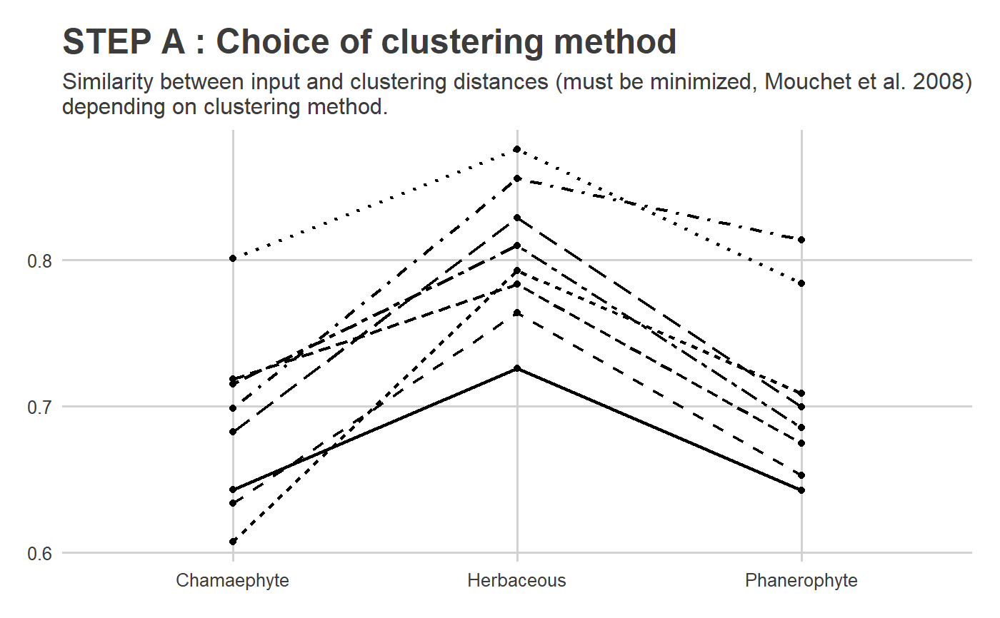
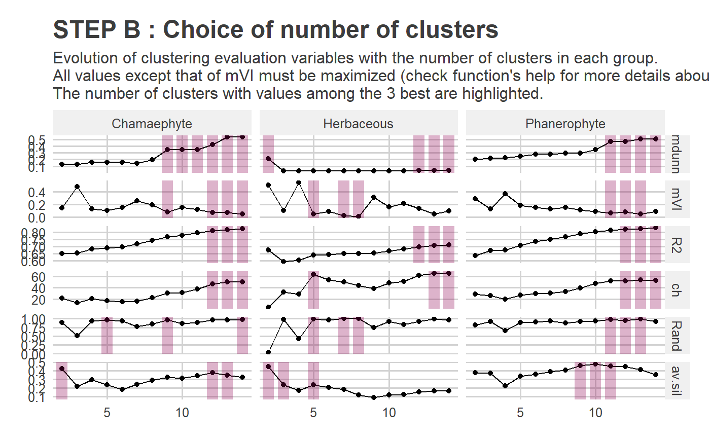
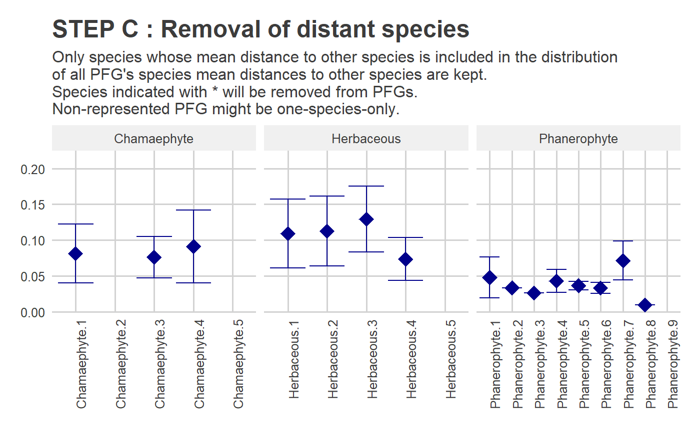
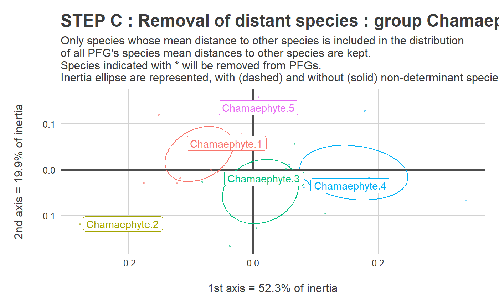
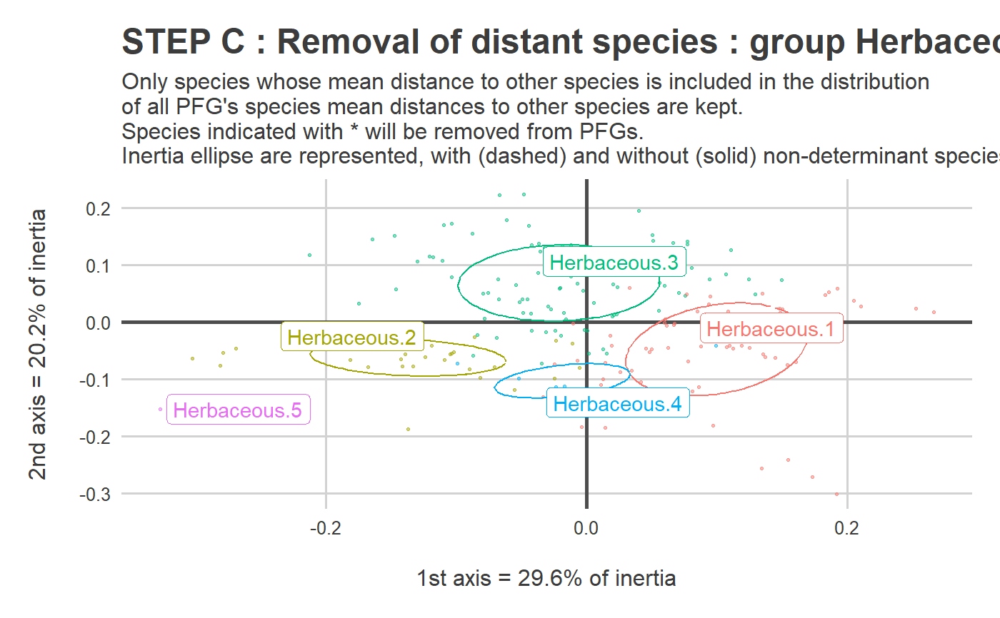
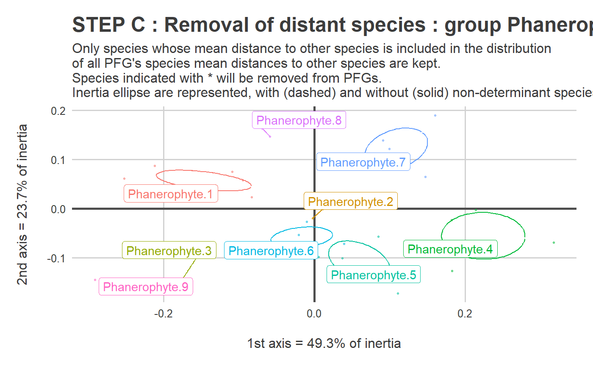
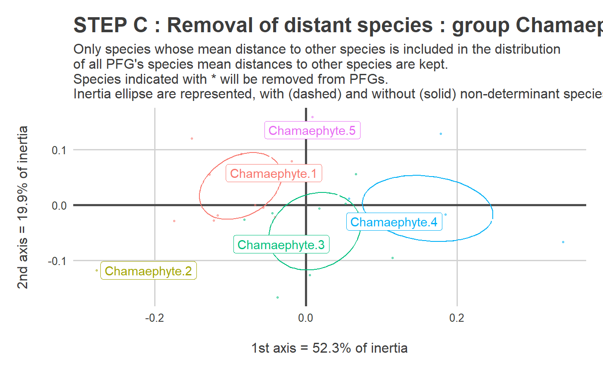
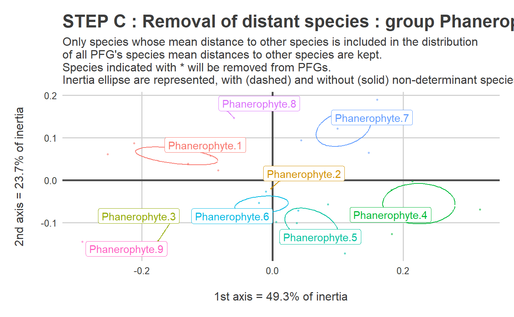

Choose clusters and select determinant species
Source:R/PRE_FATE.speciesClustering_step2.R
PRE_FATE.speciesClustering_step2.RdThis script is designed to obtain functional groups by : 1)
selecting the number of clusters to be kept from an object obtained with
the PRE_FATE.speciesClustering_step1 function ; 2) refining
these groups by identifying determinant species in each of them.
PRE_FATE.speciesClustering_step2( clust.dendrograms, no.clusters, mat.species.DIST )
Arguments
| clust.dendrograms | a dendrogram, or a |
|---|---|
| no.clusters | an |
| mat.species.DIST | a |
Value
A list containing one vector, one data.frame
with the following columns, and two ggplot2 objects :
the names of all determinant species
(determinant and non-determinant species)
ID of the plant functional group
( name of data subset cluster number name of species species number in each PFG species mean distance to other species of
the same PFG \(mean(\text{sp.mean.dist})\) within the PFG \(mean(\text{sp.mean.dist}) - 1.64 *
sd(\text{sp.mean.dist})\) within the PFG \(mean(\text{sp.mean.dist}) + 1.64 *
sd(\text{sp.mean.dist})\) within the PFGPFGGROUP + ID.cluster)GROUPID.clusterspeciesID.speciessp.mean.distallSp.meanallSp.minallSp.maxDETERMINANTTRUE if determinant species, FALSE
otherwise
ggplot2 object, representing the distribution
of mean distances between species for each functional group
list of ggplot2 objects, representing the
PFG within the functional space
One PRE_FATE_CLUSTERING_STEP_2_distantSpecies_PCO.pdf file is created
containing two types of graphics :
to visualize in each PFG the distribution of mean distance of each species to other species, and non-determinant species which are outside the distribution
to visualize in each PFG the distribution of species, with and without non-determinant species
Details
This function allows to obtain a classification of dominant
species into Plant Functional Groups (PFG), and the determinant
species based on these PFG.
What is the difference between dominant and
determinant species ?
Dominant species are species representative of an environment or a studied area, in terms of number of releves or abundance values. They can be found with the
PRE_FATE.selectDominantfunction of this package. These dominant species are used to build PFG with thePRE_FATE.speciesClustering_step1function.Once PFG are built, determinant species are defined as refined subsets of dominant species within each PFG.
The process is detailed below :each dominant species is assigned to a PFG
within each PFG :
for each species, compute its mean distance to the other species within the PFG (
sp.mean.dist)calculate the mean value of all these mean distances (
allSp.mean)calculate the deviation values around this mean value (
allSp.minandallSp.max)determinant species are the ones that are included between those deviation values
See also
cutree,
quasieuclid,
dudi.pco,
PRE_FATE.speciesDistance,
PRE_FATE.speciesClustering_step1,
PRE_FATE.speciesClustering_step3
Examples
## Load example data data(DATASET_Bauges_PFG) ## Species dissimilarity distance (niche overlap + traits distance) tab.dist = DATASET_Bauges_PFG$dom.dist_total str(tab.dist)#> List of 3 #> $ Chamaephyte : 'dist' num [1:378] 0.1622 0.1631 0.0573 0.0825 0.0576 ... #> ..- attr(*, "Labels")= chr [1:28] "X10559" "X10896" "X11038" "X11102" ... #> ..- attr(*, "Size")= int 28 #> ..- attr(*, "call")= language as.dist.default(m = mat) #> ..- attr(*, "Diag")= logi FALSE #> ..- attr(*, "Upper")= logi FALSE #> $ Herbaceous : 'dist' num [1:20706] 0.2503 0.1533 0.0506 0.4386 0.2402 ... #> ..- attr(*, "Labels")= chr [1:204] "X10113" "X10130" "X10328" "X10502" ... #> ..- attr(*, "Size")= int 204 #> ..- attr(*, "call")= language as.dist.default(m = mat) #> ..- attr(*, "Diag")= logi FALSE #> ..- attr(*, "Upper")= logi FALSE #> $ Phanerophyte: 'dist' num [1:435] 0.0134 0.1695 0.1444 0.1293 0.3155 ... #> ..- attr(*, "Labels")= chr [1:30] "X10512" "X10889" "X11057" "X11313" ... #> ..- attr(*, "Size")= int 30 #> ..- attr(*, "call")= language as.dist.default(m = mat) #> ..- attr(*, "Diag")= logi FALSE #> ..- attr(*, "Upper")= logi FALSE#> X10559 X10896 X11038 X11102 X11135 #> X10559 0.00000000 0.1622210 0.1630688 0.05731085 0.08254469 #> X10896 0.16222096 0.0000000 0.3117108 0.10101087 0.19808341 #> X11038 0.16306879 0.3117108 0.0000000 0.12611516 0.15693438 #> X11102 0.05731085 0.1010109 0.1261152 0.00000000 0.08286085 #> X11135 0.08254469 0.1980834 0.1569344 0.08286085 0.00000000## Build dendrograms ------------------------------------------------------------------------- sp.CLUST = PRE_FATE.speciesClustering_step1(mat.species.DIST = tab.dist)#> #> #> #------------------------------------------------------------# #> # PRE_FATE.speciesClustering_step1 #> #------------------------------------------------------------##> #> Clustering method : average #> Clustering evaluation...#> #> > Done!names(sp.CLUST)#> [1] "clust.dendrograms" "clust.evaluation" "plot.clustMethod" #> [4] "plot.clustNo"no.clusters = c(5, 5, 9) ## Find determinant species ------------------------------------------------------------------ sp.DETERM = PRE_FATE.speciesClustering_step2(clust.dendrograms = sp.CLUST$clust.dendrograms , no.clusters = no.clusters , mat.species.DIST = tab.dist)#> #> #> #------------------------------------------------------------# #> # PRE_FATE.speciesClustering_step2 : DETERMINANT SPECIES #> #------------------------------------------------------------##> Warning: Removed 262 rows containing missing values (geom_point).#> Warning: Removed 4 rows containing missing values (geom_point).#> #> > Done!#> Warning: Removed 262 rows containing missing values (geom_point).#> Warning: Removed 4 rows containing missing values (geom_point).names(sp.DETERM)#> [1] "determ.sp" "determ.all" "plot.distance" "plot.PCO"#> chr [1:242] "X10559" "X11102" "X11135" "X11354" "X4824" "X8244" "X8256" ...#> 'data.frame': 262 obs. of 10 variables: #> $ PFG : chr "Chamaephyte.1" "Chamaephyte.1" "Chamaephyte.1" "Chamaephyte.1" ... #> $ GROUP : chr "Chamaephyte" "Chamaephyte" "Chamaephyte" "Chamaephyte" ... #> $ ID.cluster : chr "1" "1" "1" "1" ... #> $ species : chr "X10559" "X11102" "X11135" "X11354" ... #> $ ID : num 1 2 3 4 5 6 7 8 9 10 ... #> $ sp.mean.dist: num 0.0694 0.0558 0.0758 0.0616 0.0604 ... #> $ allSp.mean : num 0.0814 0.0814 0.0814 0.0814 0.0814 ... #> $ allSp.min : num 0.0403 0.0403 0.0403 0.0403 0.0403 ... #> $ allSp.max : num 0.122 0.122 0.122 0.122 0.122 ... #> $ DETERMINANT : Factor w/ 2 levels "TRUE","FALSE": 1 1 1 1 1 2 1 1 1 1 ...## Species names sp.NAMES = DATASET_Bauges_PFG$sp.names sp.NAMES$species = paste0("X", sp.NAMES$species) determ = merge(sp.DETERM$determ.all, sp.NAMES, by = "species", all.x = TRUE) str(determ)#> 'data.frame': 262 obs. of 10 variables: #> $ species : chr "X10113" "X10130" "X10328" "X10502" ... #> $ PFG : chr "Herbaceous.1" "Herbaceous.2" "Herbaceous.1" "Herbaceous.1" ... #> $ GROUP : chr "Herbaceous" "Herbaceous" "Herbaceous" "Herbaceous" ... #> $ ID.cluster : chr "1" "2" "1" "1" ... #> $ ID : num 1 1 2 3 1 1 1 2 3 4 ... #> $ sp.mean.dist: num 0.1514 0.1596 0.1132 0.0875 0.036 ... #> $ allSp.mean : num 0.1092 0.1125 0.1092 0.1092 0.0476 ... #> $ allSp.min : num 0.0611 0.0638 0.0611 0.0611 0.0192 ... #> $ allSp.max : num 0.1573 0.1612 0.1573 0.1573 0.0761 ... #> $ DETERMINANT : Factor w/ 2 levels "TRUE","FALSE": 1 1 1 1 1 1 2 1 1 1 ...#> Warning: Removed 262 rows containing missing values (geom_point).#> Warning: Removed 4 rows containing missing values (geom_point).